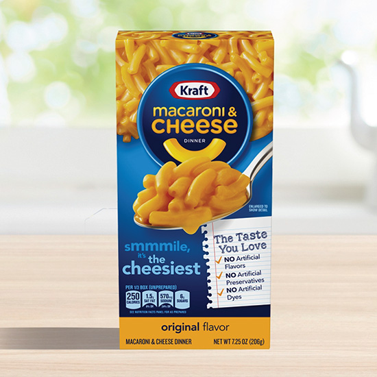
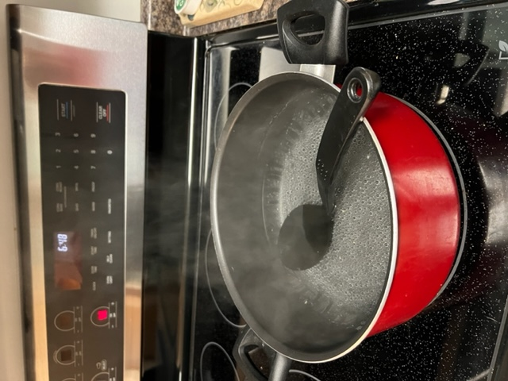
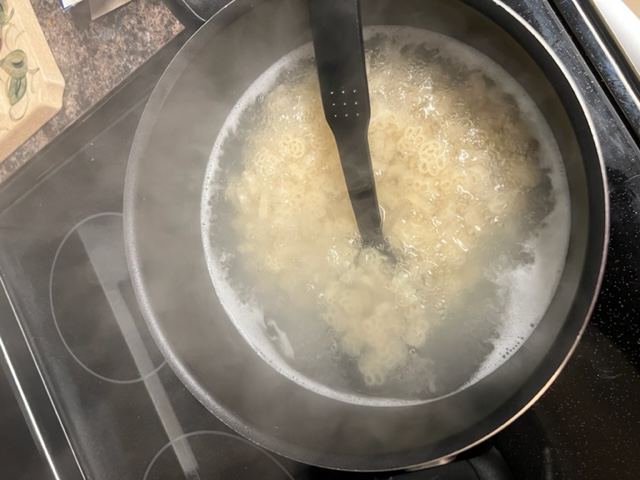
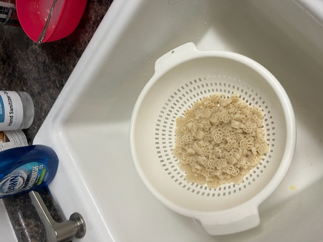

The reason I chose this food was because I like it. Another reason is because It is easy to make and takes no time at all, so its really good if your want something to eat but you don’t want to spend an hour cooking. It can also be cheap so it is a good choice if if you want e cheap and easy to make meal. it is also has a long shelf life so if you want to preserve it you can.

step 1. Boil water in a medium pot
step 2. Stir in macaroni, cook it for 7-8 minutes, but you can also stir until the macaroni is tender, while remembering to stir occasionally
step 3. Drain the macaroni from the pot, DO NOT RINSE THE MACARONI
step 4. Add butter/margarine, the milk, and the cheese powder, make sure to mix well
Dairy and wheat allergeies should not eat this food, and if you plan on eating it you should be wary of eating it